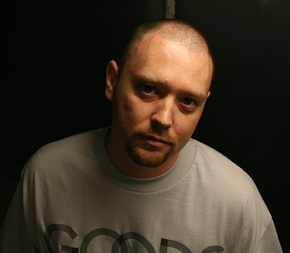

Funk duo Tuxedo is a collaboration between Los Angeles-based neo-soul singer/songwriter Mayer Hawthorne and Seattle-based hip-hop producer Jake One. Influenced by classic disco-funk of the acts of the '70s and early '80s like Chic, Shalamar, and Zapp, the two friends began trading mixtapes as far back as 2006, though the Tuxedo project wouldn't officially surface for another six years. A three-song EP based around the single "Do It" appeared seemingly out of the blue in 2013, prompting imediate interest in the duo.
 Jacob Dutton, better known as Jake One, is an American hip hop record producer from Seattle, Washington. Dutton grew up in the Central District and moved to the North End of Seattle when he was 15. He started making music on a Casio keyboard in 1992. He attended the University of Washington and gave a tape of his music to a friend who worked in a local record store. One of the store's other employees, the DJ Mr. Supreme heard the tape, and when he set up his Conception Records label, he used Dutton to create backing tracks. The first record he produced was Eclipse's "World Premier". His early influences included Pete Rock, Dr. Dre, DJ Premier, and Marley Marl. Together with Mayer Hawthorne, Jake One forms funk duo Tuxedo. Their self-titled debut album was released on March 3, 2015 through Stones Throw Records.
Andrew Mayer Cohen (born February 2, 1979), better known by the stage name Mayer Hawthorne, is a Grammy-nominated American singer, producer, songwriter, arranger, audio engineer, DJ, and multi-instrumentalist based in Los Angeles, California. Cohen was born and raised in Ann Arbor, Michigan. The stage name "Mayer Hawthorne" is a combination of Cohen's real middle name (Mayer) and Hawthorne Road, the street he grew up on. Cohen also performs and records in the groups Tuxedo and Jaded Incorporated.